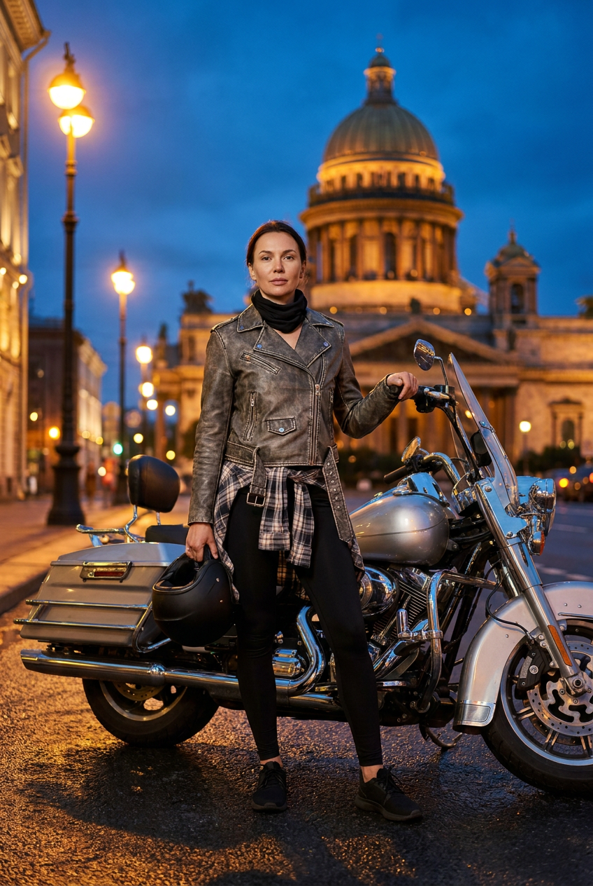
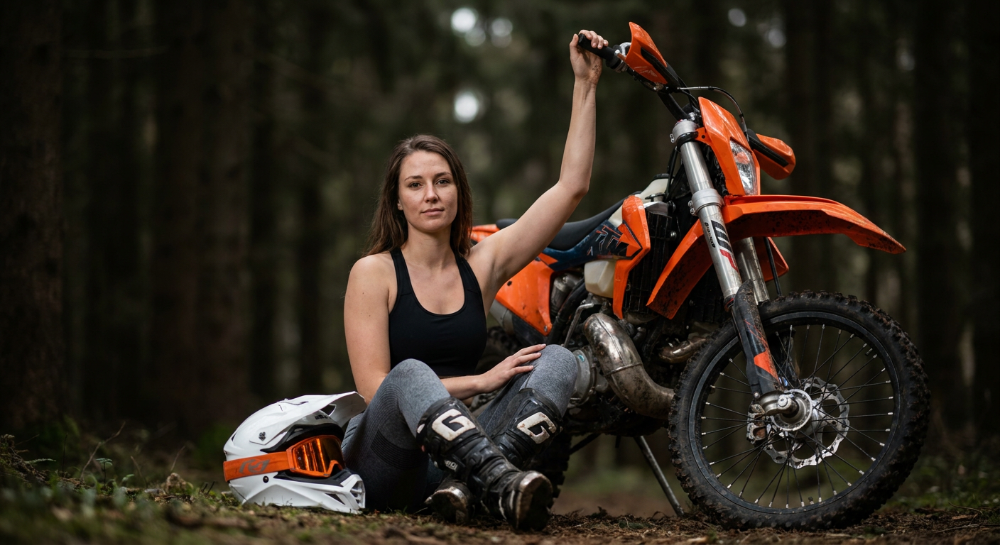
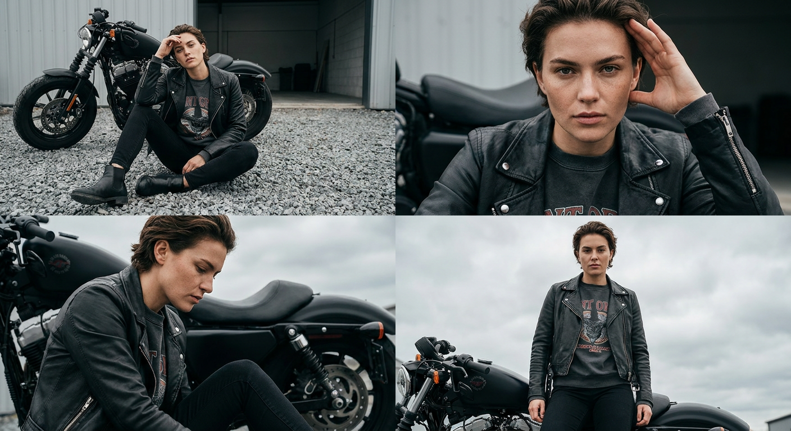
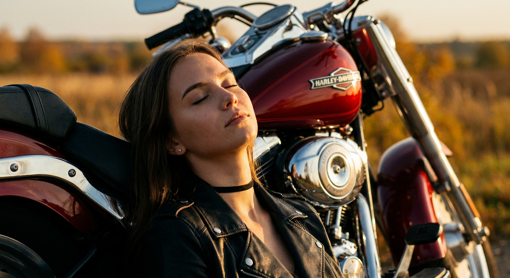
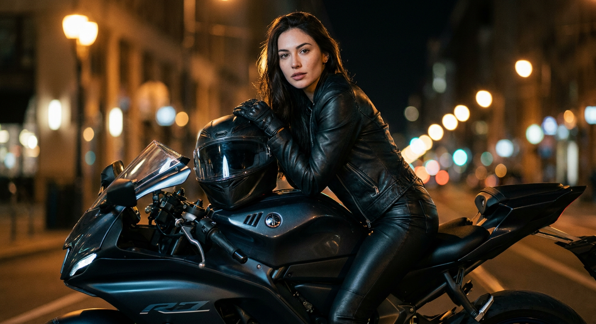
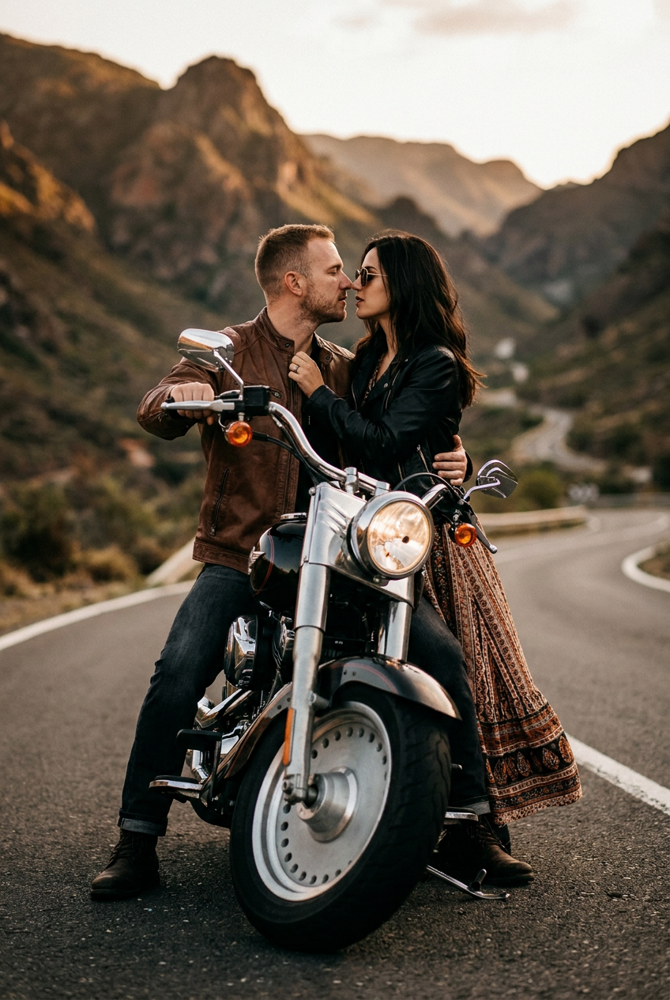
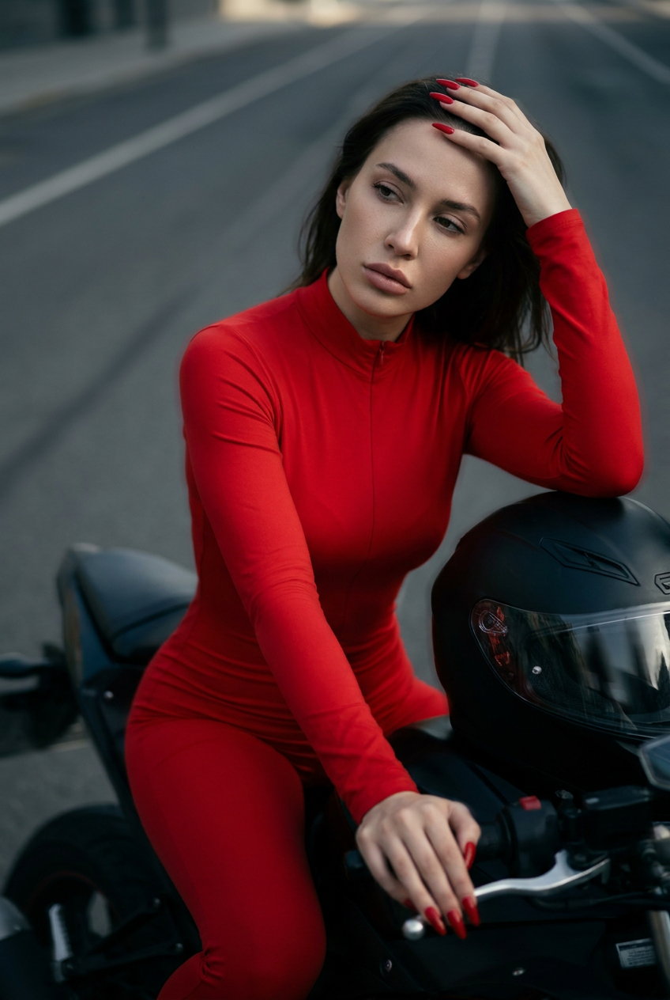
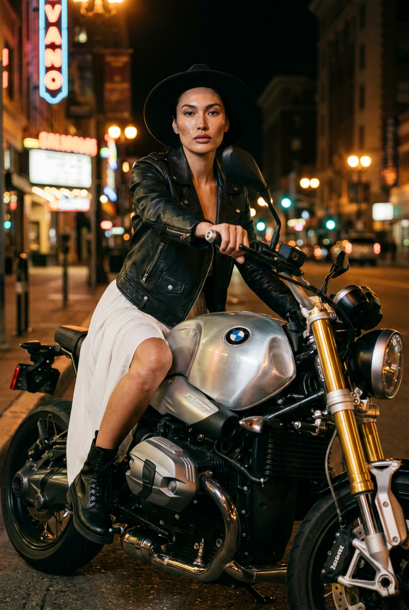
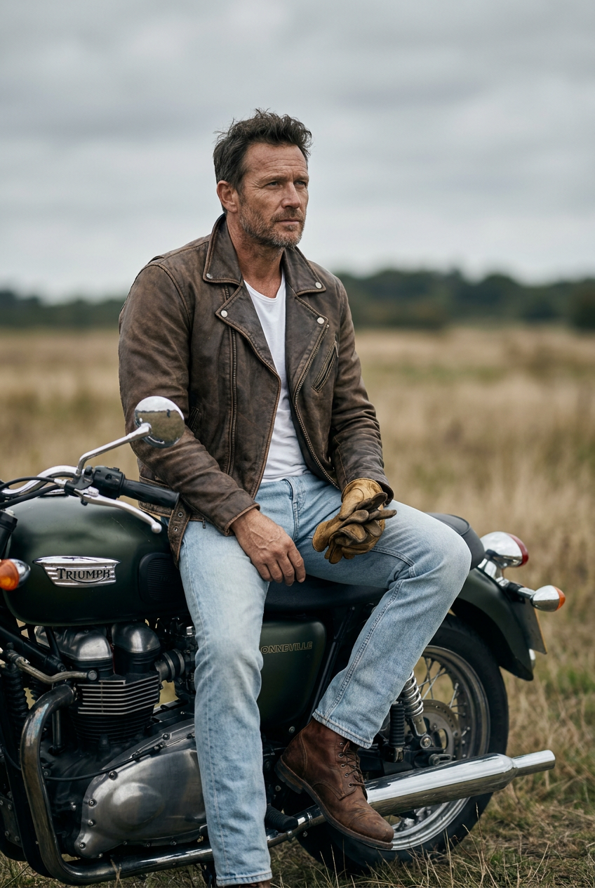
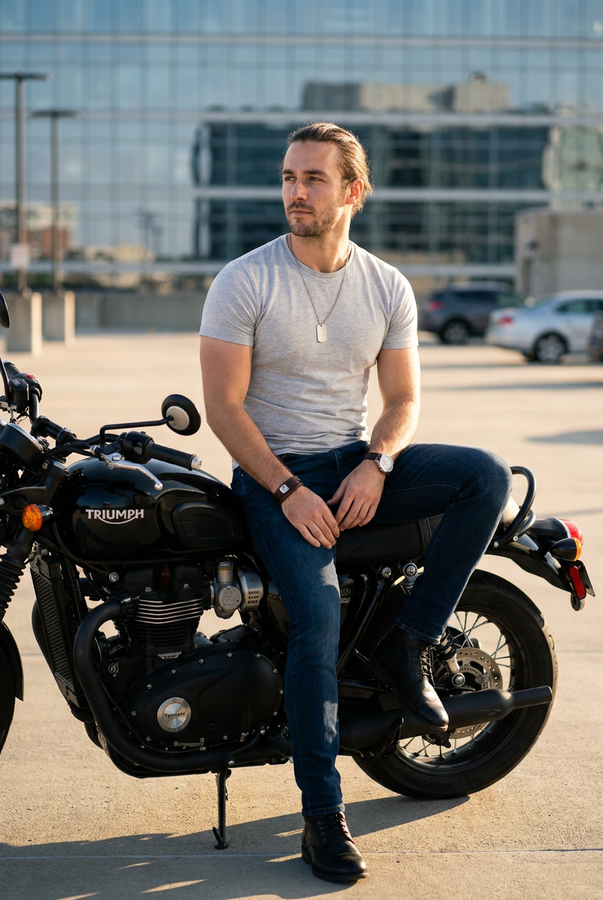

ИИ-фото с мотоциклом: 10 промптов для нейросети

Обычная фотография рядом с мотоциклом не всегда выглядит как кадр из журнала: мешают случайный фон, неудачный свет и отсутствие подходящей экипировки. Генерация помогает собрать нужную сцену в одном стиле — от ночной улицы с неоном до пустой горной дороги.
В подборке — 10 промптов для портретов, fashion-съёмок и сюжетных кадров с мотоциклом. Здесь есть идеи для одного человека, пары, коллажа 2×2, спортивного эндуро, классического Triumph и хромированного cruiser.
Как сгенерировать такое фото: пошагово
Нужен снимок анфас при ровном свете, лицо в кадре целиком, без тёмных очков и головных уборов. Разрешение от 1000 пикселей по короткой стороне. Чем чётче исходник, тем точнее модель повторит черты.
Выберите сценарий ниже и нажмите «Копировать» — текст уйдёт в буфер целиком, вместе с командой сохранения внешности. Эта команда стоит первой строкой и отвечает за то, чтобы на выходе было ваше лицо, а не случайное.
Кнопка «Сгенерировать» рядом с каждым промптом открывает модель в новой вкладке. Nano Banana Pro работает с референсом лица — в отличие от моделей, которые генерируют портрет с нуля и узнаваемость теряют.
Промпт — в поле ввода, портрет — через загрузку референса. Порядок значения не имеет, но без референса команда сохранения внешности работать не будет: модели нечего сохранять.
Для сторис и ленты берите 9:16, для превью и обложек — 4:3. Первый результат редко идеален: если поза или свет ушли не туда, поправьте соответствующую часть промпта и запустите заново. Обычно хватает двух-трёх итераций.
10 промптов для генерации
1. Ночной байкерский портрет
Строго сохранить внешность по загруженному референсу: черты лица, пропорции, мимику и текстуру кожи без изменений. Фотореалистичная fashion-съёмка на ночной городской площади: за героем возвышается большой светящийся собор с куполом, вокруг смешиваются синие сумерки и тёплые огни улицы. Перед крупным хромированным мотоциклом touring или cruiser человек стоит уверенно, но без напряжения: в одной руке держит шлем, второй опирается на байк, взгляд направлен прямо в объектив. На нём серо-коричневая или серебристая кожаная куртка, чёрные узкие леггинсы, кеды или кроссовки, клетчатая рубашка завязана на талии, на шее чёрный аксессуар. Волосы аккуратно уложены и слегка шевелятся от ветра. Мягкий тёплый свет фонарей, cinematic mood, street fashion, biker chic, выразительные отражения на металле, реалистичная кожа, журнальная композиция, высокая детализация.
2. Эндуро в осеннем лесу

Строго сохранить внешность по загруженному референсу: черты лица, пропорции, мимику и текстуру кожи без изменений. Outdoor fashion-фотография в лесу: девушка сидит на земле рядом с ярко-оранжевым эндуро-мотоциклом, одна рука поднята и держится за руль. Поза расслабленная и уверенная, камера расположена низко, лицо в резком фокусе. На девушке чёрный спортивный топ, серые облегающие леггинсы, бело-чёрные мотоботы и защитные наколенники. Возле неё на земле лежит белый мотошлем с оранжевым визором. Тёмный размытый лес на заднем плане, мягкий естественный свет, акцент на оранжевой технике, хорошо видны текстуры земли, грязи, ткани и защитной экипировки. Профессиональная editorial-съёмка, shallow depth of field, moody tones, ultra realistic, natural skin texture, sharp focus on face, high detail, объектив 85mm. Негативный промпт: аниме, мультфильм, CGI, пластик, кукольное лицо, искажённые черты лица.
3. Коллаж в стиле biker editorial

Строго сохранить внешность по загруженному референсу: черты лица, пропорции, мимику и текстуру кожи без изменений. Собери фотореалистичный коллаж 2×2 в едином стиле дорогой biker editorial-съёмки. Верхний левый кадр: человек сидит на гравии рядом с чёрным мотоциклом, одна рука поднята ко лбу, показан полный или почти полный рост. Верхний правый: крупный портрет рядом с байком, рука у головы, прямой взгляд в камеру. Нижний левый: боковой ракурс, человек сидит на мотоцикле или возле него, смотрит вниз, поза задумчивая. Нижний правый: средний портрет у техники, руки расслаблены, лицо хорошо видно. Единый образ во всех сценах: чёрная кожаная байкерская куртка, тёмно-серый или чёрный свитшот с винтажным принтом, узкие чёрные джинсы, грубые ботинки. Одинаковые цвет, свет, фактура и узнаваемость лица, реалистичный металл, кинематографичная обработка, высокая детализация.
4. Красный Harley на закате

Строго сохранить внешность по загруженному референсу: черты лица, пропорции, мимику и текстуру кожи без изменений. Кинематографичный фотореалистичный портрет молодой женщины в чёрной кожаной куртке и чокере. Она сидит, откинувшись на красный мотоцикл Harley-Davidson, глаза закрыты, выражение лица спокойное и уверенное. Съёмка с низкой точки, полукрупный кадр примерно от талии до лица. На заднем плане мягко размыты осенние поля, работает эффект боке. Золотой час, тёплый солнечный свет, контрастные тени, глубокая палитра насыщенного красного и чёрного. Хром и лакированные детали мотоцикла дают яркие естественные отражения. Передай фактуру кожи человека, кожаной куртки и элементов байка, используй аккуратную естественную ретушь. Профессиональная журнальная фотография, high resolution, realistic skin texture, cinematic contrast, выразительный низкий ракурс.
5. Ночной спортбайк и неон

Строго сохранить внешность по загруженному референсу: черты лица, пропорции, мимику и текстуру кожи без изменений. Реалистичный ночной уличный портрет молодой женщины, которая облокотилась на спортивный мотоцикл. На ней чёрная кожаная куртка, облегающие кожаные брюки и перчатки; закрытый шлем лежит на топливном баке. Вокруг мягко размыты городские огни, тёплые фонари сочетаются с прохладными бликами на металле. По волосам проходит тонкий боковой rim light, макияж естественный. Передай детальную фактуру кожи, куртки, брюк и поверхности мотоцикла. Низкая глубина резкости, кинематографичный контраст, реалистичная цветокоррекция, лёгкий плёночный шум и ночная урбанистическая атмосфера. Съёмка на объектив 50mm при большой диафрагме, мягкое боке, editorial portrait, ultra realistic, без глянцевого пластикового эффекта.
6. Поцелуй на горной дороге

Строго сохранить внешность по загруженному референсу: черты лица, пропорции, мимику и текстуру кожи без изменений. Вертикальная фотореалистичная сцена с романтической парой возле классического мотоцикла cruiser или naked bike на пустой горной дороге. Мужчина и женщина стоят или сидят в объятиях, целуются либо почти касаются губами; поза очень близкая и нежная. Мужчина одет в коричневую кожаную куртку, тёмные джинсы и ботинки, у него короткая стрижка и лёгкая щетина. На женщине чёрная кожаная куртка, длинное струящееся платье с этническим узором, длинные тёмные волосы и солнцезащитные очки. Между ними и под ними виден байк, крупно показаны переднее колесо и фара. На фоне горы, долина и пустой асфальт, драматичный мягкий свет заката. Editorial couple photography, 85mm, размытый фон, естественная текстура кожи, ultra realistic, cinematic color grading, высокая детализация.
7. Красный комбинезон на байке

Строго сохранить внешность по загруженному референсу: черты лица, пропорции, мимику и текстуру кожи без изменений. Премиальная fashion-съёмка: человек сидит на мотоцикле в выразительной задумчивой позе, одна рука поднята к голове, вторая вытянута вниз и вперёд. На нём облегающий ярко-красный длинный комбинезон или боди с рукавами, ногти длинные и тоже красные; рядом лежит чёрный мотоциклетный шлем. Кадр вертикальный, средний план, главный акцент на лице и пластике позы. Фон минималистичный: размытая городская дорога или серый асфальт с диагональными линиями, лёгкий motion blur, нейтральная палитра. Мягкий естественный свет создаёт драматичный контраст и аккуратные тени. Стиль дорогой editorial fashion photography, cinematic, ultra realistic, high detail, натуральная текстура кожи, реалистичная цветокоррекция, малая глубина резкости, чистая журнальная композиция.
8. Белое платье и серебристый байк

Строго сохранить внешность по загруженному референсу: черты лица, пропорции, мимику и текстуру кожи без изменений. Ночная fashion-фотография на городской улице: человек сидит на крупном серебристом мотоцикле roadster или naked bike, одна рука лежит на руле, лицо повернуто к камере, взгляд прямой и слегка отстранённый. Образ сочетает чёрную кожаную куртку, длинное белое струящееся платье или юбку, чёрные ботинки и широкополую чёрную шляпу. Стиль edgy fashion, biker chic, cinematic editorial. У мотоцикла много хрома и металла, подробно прорисован двигатель, на поверхностях видны реалистичные отражения. На заднем плане тёплые огни города, неон и фонари растворяются в мягком боке. Искусственный уличный свет даёт мягкие блики на коже и металлических деталях, сохраняй естественные тени и контраст. Дорогая журнальная съёмка, night mood, высокая детализация, реалистичная фактура ткани и металла.
9. Triumph среди полей

Строго сохранить внешность по загруженному референсу: черты лица, пропорции, мимику и текстуру кожи без изменений. Вертикальный фотореалистичный портрет мужчины на классическом мотоцикле Triumph посреди открытого поля. Он сидит расслабленно и уверенно, корпус немного развёрнут влево, взгляд направлен вдаль, не в объектив. В одной руке или рядом с собой он держит мотоциклетные перчатки. Одежда: коричневая кожаная байкерская куртка, белая футболка, светло-голубые джинсы и коричневые кожаные ботинки. Пасмурное небо даёт мягкий рассеянный свет без жёстких бликов. Атмосфера спокойная, мужественная и немного задумчивая, фон слегка размыт. Используй приглушённые землистые тона, натуральную цветокоррекцию, реалистичные текстуры кожи, ткани и металла, shallow depth of field. Editorial fashion photography, объектив 85mm, ultra realistic, high detail, чистая вертикальная композиция.
10. Городская парковка и Triumph

Строго сохранить внешность по загруженному референсу: черты лица, пропорции, мимику и текстуру кожи без изменений. Вертикальное fashion-фото мужчины, сидящего боком на чёрном мотоцикле Triumph на городской парковке или верхнем уровне паркинга. На фоне современное здание с размытыми окнами. Мужчина одет в светло-серую облегающую футболку, тёмно-синие джинсы и чёрные кожаные ботинки. На шее тонкая цепочка с жетоном, на запястье часы и браслет. Волосы средней длины собраны назад, есть лёгкая щетина. Поза спокойная и уверенная: одна рука касается предплечья, вторая опущена или лежит на колене, взгляд направлен в сторону. Тёплый дневной свет, мягкие тени, естественные цвета, премиальная editorial-съёмка. Cinematic, ultra realistic, high detail, shallow depth of field, объектив 85mm, аккуратное размытие фона, реалистичная кожа, металл и ткань. Без шлема, без лишних аксессуаров и случайных предметов в кадре.
Что важно учесть в этом стиле
Мотоцикл должен быть частью композиции, а не случайным объектом на заднем плане. Сразу задавайте его тип, цвет, положение колёс и видимые детали: бак, фару, двигатель, хром или отражения на лаке.
Для фотореализма полезно указывать объектив и характер света. 85mm даст портретную перспективу и мягкое размытие, 50mm лучше подойдёт для ночной улицы. Если нужен модный журнальный кадр, добавьте editorial photography, естественную текстуру кожи, аккуратную цветокоррекцию и конкретную глубину резкости.
Идеи для вариаций
- Замените ночную площадь на мокрую парковку с отражениями неона.
- Добавьте пыль, следы шин и мотокроссовую трассу к сцене с эндуро.
- Перенесите классический мотоцикл на пустую прибрежную дорогу.
- Сделайте серию в одной одежде, но поменяйте ракурсы: профиль, крупный портрет и полный рост.
- Для парного кадра попробуйте дождь, развевающееся платье или свет фары в сумерках.
Как собрать свой промпт
Начните с формата кадра и места: вертикальный портрет, лес, городская улица или горная дорога. Затем опишите героя, одежду, позу и действие руками — именно эти детали чаще всего определяют убедительность сцены.
После этого задайте мотоцикл: класс, цвет, ракурс и заметные элементы. В финале добавьте свет, объектив, глубину резкости, настроение и ограничения. Для одного образа закладывайте 4–8 генераций: меняйте только один параметр за попытку, чтобы понять, что именно улучшило результат.
Ошибки, из-за которых кадр не получается
- Слишком общий мотоцикл. Без типа и цвета нейросеть смешивает cruiser, спортбайк и эндуро.
- Перегруженная сцена. Большое число предметов конкурирует с лицом и ломает композицию.
- Не задана поза рук. В результате появляются лишние пальцы, странный хват руля или неестественная посадка.
- Противоречивый свет. Не сочетайте без пояснения жёсткий полуденный луч, неон и мягкий закат.
- Нет негативного промпта. Для портретов отдельно исключайте пластик, CGI, искажённые черты и лишние конечности.
Частые вопросы
Как сделать такое ИИ-фото бесплатно?
Для первых попыток подойдут Kandinsky и Шедеврум: они доступны без оплаты, но могут слабее сохранять лицо и сложнее справляться с точной позой, мотоциклом и мелкими деталями. Krea AI и Arena.ai удобны для тестов разных моделей, однако доступность генераций, референсов и разрешения зависит от текущих условий сервиса. Бесплатный результат почти всегда требует нескольких вариантов и ручного отбора.
Как сохранить сходство с человеком на фото?
Загрузите чёткий референс без сильных фильтров, где хорошо видны глаза, нос, губы и овал лица. В промпте не перегружайте описание внешности новыми деталями: лучше отдельно зафиксировать одежду, позу и свет. Если модель меняет лицо, уменьшите стилизацию, используйте режим image reference и сделайте 4–8 вариантов.
Почему нейросеть искажает мотоцикл?
Техника сложнее простого фона: у неё много симметричных деталей, спиц, зеркал и металлических элементов. Укажите класс байка, цвет, видимый ракурс и конкретные части — например, крупную фару, переднее колесо или детализированный двигатель. Помогает и негативный промпт с запретом лишних колёс, деформированных рулей и плавленого металла.
Как получить журнальный, а не постановочный кадр?
Опишите не только одежду, но и работу камеры: объектив 50mm или 85mm, вертикальный формат, малая глубина резкости, мягкий боковой свет, естественные тени. Добавьте действие — герой опирается на мотоцикл, смотрит вдаль или держит шлем. Чем точнее задана поза и источник света, тем меньше изображение похоже на случайный коллаж.